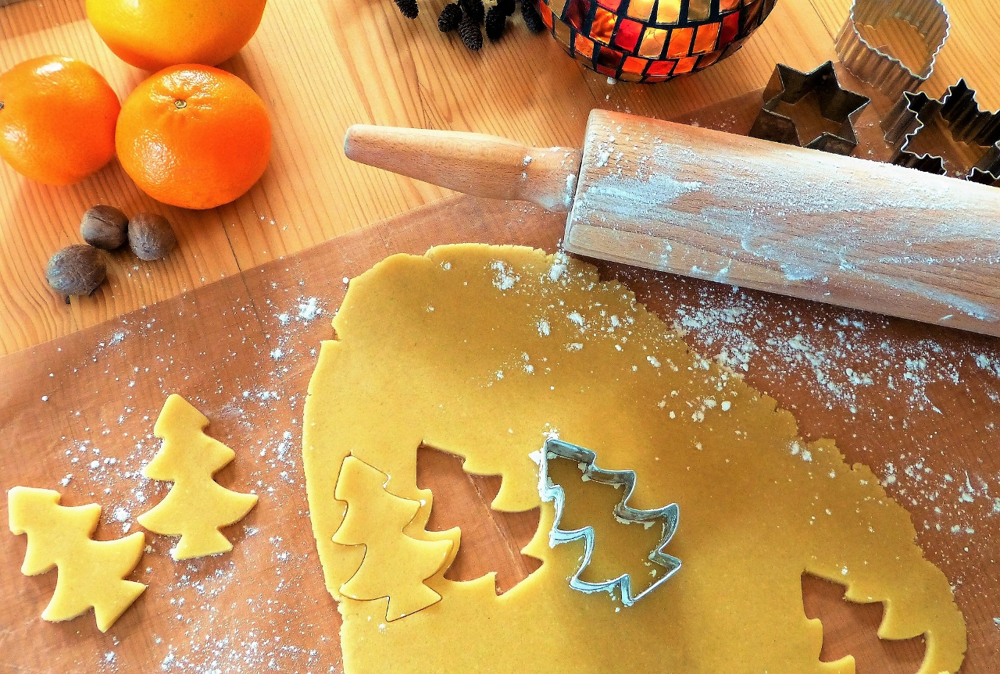
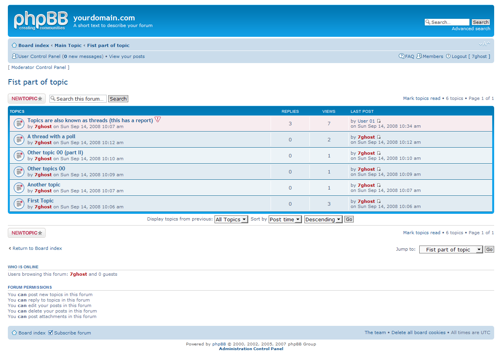
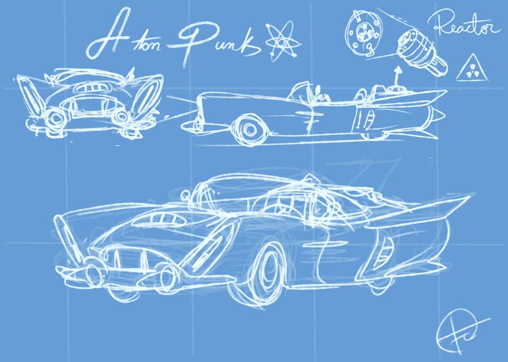
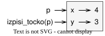

Licenca
To delo je na voljo pod pogoji slovenske licence Creative Commons 2.5:
priznanje avtorstva - nekomercialno - deljenje pod enakimi pogoji.
Celotna licenca je na voljo na spletu na naslovu http://creativecommons.org/licenses/by-nc-sa/2.5/si/. V skladu s to licenco je dovoljeno vsakemu uporabniku delo razmnoževati, distribuirati, javno priobčevati, dajati v najem in tudi predelovati, vendar samo v nekomercialne namene in ob pogoju, da navede avtorja oziroma avtorje in izdajatelja tega dela. Če uporabnik delo predela, kar pomeni, da ga spremeni, preoblikuje, prevede ali uporabi to delo v svojem delu, lahko predelavo dela ponudi na voljo le pod pogoji, ki so enaki pogojem iz te licence oziroma pod enako licenco.

Razredi in objekti
Pri sestavljanju večine programov do zdaj, si pri njihovem razvoju uporabil(-a) postopkovno programiranje. Pri postopkovnem programiranju je poudarek na tem, da problem razgradimo na več funkcij ali postopkov, ki delujejo na podatkih.
Objektno usmerjeno programiranje (srečamo tudi izraz predmetno usmerjeno programiranje) se je razvilo kot odgovor na vprašanje, kako obvladovati vedno obsežnejše in zapletenejše sisteme programske opreme ter kako uspešno upravljati takšne sisteme v daljšem časovnem obdobju. Pri objektno usmerjenem programiranju je poudarek na ustvarjanju objektov oziroma predmetov, ki združujejo tako podatke, kot funkcije, ki delujejo na teh podatkih.
Pri/po tej učni enoti boš:
- znal(-a) opredeliti strukturirano, objektno in dogodkovno programiranje,
- spoznal(-a) osnovne koncepte objektno usmerjenega programiranja.

Testo je računalniški pomnilnik, v katerega z modelčkom za piškote (razred) izrežemo oziroma ustvarimo posamezne piškote (objekte ali primerke razreda).Kaj je objektno usmerjeno programiranje
Strukturirano programiranje
Če si kdaj napisal(-a) in uporabil(-a) lastno funkcijo, potem si programiral(-a) v slogu programiranja, ki ga imenujemo strukturirano programiranje (ang. structured programming) ali postopkovno programiranje (ang. procedural programming). Cilj strukturiranega programiranja je napisati jasno in učinkovito programsko kodo tako, da problem razbijemo na zaporedje manjših problemov. Vsakega od teh manjših problemov se lotimo tako, da v obliki podprograma (ang. procedure, subroutine) ali funkcije (ang. function) napišemo postopek, ki rešuje ta podproblem.
Pri strukturiranem programiranju podatke običajno shranimo v programski jezik vgrajene osnovne podatkovne strukture – števila, nize, tabele itd. – v katerih hranimo podatke, potem pa jih posredujemo funkcijam, ki delujejo nad temi podatki. Pri stukturiranem programiranju se torej osredotočimo na sam proces, ki mu posredujemo podatke, potrebne za ta proces. Podatki so načeloma neodvisni od procesa in le od programerja je na primer odvisno, ali bo v postopku med sabo zmnožil dve spremenljivki s števili (kar je smiselno, če števili predstavljata na primer dolžini in ne, če števili predstavljata število prebivalcev v dveh mestih).
Objektno usmerjeno programiranje
Pri objektno usmerjenem programiranju (ang. object-oriented programming – OOP) pa izhajamo iz samih podatkov za katere določimo postopke, ki jih lahko nad temi podatki izvajamo. Tako so podatki in funkcije, ki delujejo nad temi podatki, združeni v samostojno enoto oziroma entiteto, ki ji rečemo objekt (ang. object). Namesto, da bi funkcijam posredovali podatke, naložimo podatke, s katerimi želimo delati, v objekt ter nato pokličemo funkcije objekta, ki na podlagi podatkov objekta ustvarijo želeni rezultat.
Poglejmo enostaven primer. Denimo, da imamo podatka o dolžini stranic pravokotnika. Pri »navadnem« programiranju bi ta dva podatka shranili v dve spremenljivki. V kodi med spremenljivkama ni nobene povezave, je le v programerjevi glavi. Ko želimo izračunati ploščino tega pravokotnika, napišemo funkcijo, ki sprejme dva parametra (dolžini stranic) in vrne ploščino.
Pri objektno usmerjenem programiranju pa bi ustvarili razred Pravokotnik. Ta bi omogočal tako hranjenje podatkov o dolžini stranic določenega pravokotnika, kot tudi vseboval funkcijo, ki pove ploščino tega pravokotnika. Podatka sta sedaj povezana, saj sta del istega objekta. Prav tako funkcija, ki računa ploščino, »ve«, da podatka predstavljata dolžini stranic.
Objekti, ki jih ustvarimo, pogosto odražajo entitete v resničnem svetu. Na primer, če bi želeli napisati programsko kodo za forum na spletni strani, bi zelo verjetno ustvarili objekt Oseba, ki bi vseboval vse informacije o nekem članu foruma (na primer ime, uporabniško ime, e-poštni naslov, geslo itd.), kot tudi funkcije, ki bi delovale s temi podatki ali nad temi podatki (na primer registracija, prijava, odjava, prepoved itd.).
Razlike med strukturiranim in objektno usmerjenim programiranjem
Z objektno usmerjenim programiranjem dobimo možnost ustvarjanja novih podatkovnih tipov oziroma podatkovnih struktur. S tem lahko predpišemo, kaj smemo z določenimi podatki početi. Za podatkovne tipe, ki so vgrajeni v jezik, je poskrbljeno (dveh nizov ne moremo zmnožiti), a načeloma ne dovolj.
Recimo, da imamo podatek o tem, koliko sporočil je v forumu objavil uporabnik. Dobro bi bilo, če bi ta podatek imeli shranjen v podatkovnem tipu, ki ne bi dovolil, da dva tovrstna podatka med sabo zmnožimo!

Kaj je objektno usmerjeno programiranje
Zelo pomembno pri objektno usmerjenem programiranju je tudi to, da na enostaven način omogoča, da podatke o določeni stvari hranimo na en način, uporabljamo pa na drug način.
Verjetno si že opazil(-a), da programi za preglednice datume hranijo v obliki celega števila, nam pa jih prikazujejo na »običajen način« (denimo kot 21. 3. 2019). Zaradi takega načina se lahko zelo poenostavijo določeni postopki, denimo računanje števila dni med dvema datumoma. Prav tako je enostavneje omogočiti prikaz datumov še na druge načine (denimo kot 21-Mar-2019).
Ne zanima nas način, kako je podatek (o objektu vrste Datum) shranjen, objektu le naročimo (nad njim izvedemo funkcijo), v kakšni obliki naj posreduje hranjeni datum.
Dogodkovno programiranje
Dogodkovno programiranje (ang. event-driven programming) je slog programiranja, pri katerem tok programa določajo različni dogodki, kot na primer dejanja uporabnikov (klik z miško, pritisk tipke), izhodi senzorjev ali sporočila, ustvarjena v tem ali v drugih programih. Dogodkovno programiranje je prevladujoči slog programiranja pri programih, opremljenih z grafičnimi uporabniškimi vmesniki (take so danes praktično vse aplikacije). Deluje tako, da izvaja določena dejanja kot odgovor na dejanja uporabnikov (klik z miško, vnos podatka itd.)
Programi, razviti z uporabo dogodkovnega programiranja, običajno delujejo tako, da zaženejo glavno zanko (ang. main loop), ki čaka na dogodke. Ko se zgodi eden izmed dogodkov, glavna zanka sproži povratno funkcijo tega dogodka (ang. callback function). Ta izvede določeno dejanje oziroma postopek.
Prednosti objektno usmerjenega programiranja
Strukturirano in objektno usmerjeno programiranje sta dva različna načina za dosego istega cilja. Nobeden izmed obeh načinov ni »boljši« od drugega, to je v veliki meri odvisno od osebnega okusa programerja oziroma razvijalca programske kode. Obstaja nekaj prednosti, ki jih programrerjem oziroma razvijalcem ponuja uporaba objektno usmerjenega sloga programiranja:
Enostavna preslikava situacij iz resničnega življenja: Objekte je enostavno preslikati v »objekte« v resničnem življenju, kot so na primer osebe, različni predmeti, izdelki, nakupovalni vozički v spletnih trgovinah, objave v spletnem dnevniku itd. To zelo olajša pisanje programov. Vnaprej je precej jasna vloga vsakega objekta, podobno pa so jasni tudi odnosi oziroma povezave med posameznimi objekti.
Enostavno pisanje modularne kode: Objektno usmerjen slog programiranja je zelo primeren za pisanje kode v ločenih modulih. Z ločevanjem kode v ločene module je koda bolj obvladljiva, saj so moduli namenski – rešujejo točno določene probleme oziroma naloge nad določeno vrsto podatkov. Posledično je tako kodo lažje razhroščevati in razširiti njene zmožnosti.
Enostavno pisanje kode za večkratno uporabo: Objektno usmerjeno programiranje omogoča relativno enostavno pisanje kode za večkratno uporabo, saj so podatkovne strukture in funkcije združene v enem objektu, primernem za večkratno uporabo. To nam pri pisanju aplikacij prihrani veliko časa. Sčasoma lahko zgradimo celo knjižnico modulov kode za večkratno uporabo. Te module potem lahko uporabimo v različnih aplikacijah. Prav tako je mogoče vzeti obstoječi objekt in ga razširiti za uporabo v novi aplikaciji tako, da objektu dodamo nove funkcionalnosti. Tudi tako lahko objekte na enostaven način uporabimo večkrat.
Določanje novih podatkovnih tipov: Na posamezne razrede lahko gledamo kot na nove podatkovne tipe. Razrede lahko sestavimo tako, da so podatki, ki opisujejo določen objekt vedno smiselni oziroma v določenem stanju. Na primer razred Ulomek lahko sestavimo tako, da bo imenovalec vedno pozitiven. Na ta način lahko poenostavimo delo s podatki, ki nam predstavljajo ulomke, saj ni treba paziti na to, da je imenovalec morda enak 0. Prav tako lahko ločimo način, kako podatke hranimo in kako so predstavljeni – na primer v objektu tipa Datum lahko datum hranimo v obliki števila (datum je predstavljen na primer kot število dni po 1. 1. 1800), ob prirejanju in izpisovanju pa lahko uporabimo »običajni« zapis kot »21/3/2018«.
Osnovni koncepti objektnega programiranja
Razredi
Razred (ang. class) je načrt oziroma recept za izdelavo objektov. To je del kode, ki v programu definira:
- kje in kakšne tipe podatkov bodo objekti, izdelani iz razreda, shranjevali in
- funkcije, ki jih bodo ti objekti vsebovali.
Ko gradimo oziroma izdelujemo objektno usmerjeno aplikacijo najprej ugotovimo, katere različne tipe entitet v aplikaciji potrebujemo. Običajno v knjižnicah nimamo na voljo vseh ustreznih. Zato ustvarimo enega ali več razredov, ki predstavljajo manjkajoče tipe entitet. Če na primer izdelujemo spletni forum, potem bomo zelo verjetno ustvarili razrede, imenovane Forum, Tema, Objava in Oseba. Predstavljamo si lahko, da z razredom ustvarimo nov podatkovni tip.
Objekti
Objekt (ang. object) je posebna vrsta spremenljivke, ki je izdelana oziroma ustvarjena iz razreda. Vsebuje dejanske podatke in vedenje o tem, katere so funkcije objekta, ki jih lahko pokličemo, da nekaj naredijo s podatki objekta. Iz enega razreda lahko ustvarimo poljubno mnogo objektov te vrste. Vsak objekt deluje neodvisno od drugih, čeprav vsi izvirajo iz istega razreda.
Če uporabimo primer iz resničnega življenja:
- Razred je kot načrt za avto. Definira, kako bo avto, ki ga bomo izdelali po tem načrtu, izgledal in kako se bo obnašal, še vedno pa je to abstrakten koncept. Če imamo le načrt, s tem še nimamo nobenega avtomobila.
- Objekt je resničen avto, ki ga izdelamo po načrtu. Ima resnične lastnosti (na primer kakšne barve je, kakšna je njegova trenutna hitrost itd.) in resnično obnašanje (na primer »pospeši« in »zaviraj«).
Ker objekt izdelamo iz razreda, pogosto rečemo, da je objekt primerek (ang. instance) razreda.
Lastnosti
Vrednosti podatkov, ki jih vsebuje objekt, so shranjene v posebnih spremenljivkah, ki jih imenujemo lastnosti (ang. properties). Lastnosti objekta so tesno povezane s samim objektom. Čeprav imajo vsi objekti, ki jih ustvarimo iz danega razreda, iste lastnosti, se vrednosti teh lastnosti med posameznimi objekti razlikujejo.
Metode
Funkcije, ki so definirane znotraj razreda – in uporabljene v objektu – imenujemo metode (ang. methods). V veliko pogledih so to kot običajne funkcije – lahko jim posredujemo vrednosti, lahko vsebujejo lokalne spremenljivke in lahko vračajo vrednosti. Vendar metode objekta tipično uporabljamo za delo z lastnostmi objekta.
Na primer metoda prijava(), ki jo uporabimo, da prijavimo člana v spletni forum, nastavi članovo lastnost prijavljen na resnično oziroma True. Podobno bo metoda obseg() v razredu Pravokotnik iz podatkov o pravokotniku izračunala in vrnila njegov obseg.
Metode se od funkcij razlikujejo tudi po tem, da vedno »vedo«, nad katerim objektom jih izvajamo.

Osnovni koncepti objektno usmerjenega programiranja
Objektno usmerjeno programiranje ima štiri osnovne koncepte: ograjevanje ali enkapsulacijo (ang. encapsulation), zakrivanje ali abstrakcijo (ang. abstraction), dedovanje (ang. inheritance) in večobličnost ali polimorfizem (ang. polymorphism). Čeprav se ti koncepti morda zdijo zapleteni, ti bo razumevanje njihovega delovanja pomagalo razumeti osnove objektno usmerjenega programa.
Ograjevanje ali enkapsulacija
Na podoben način kot pilula »ogradi« zdravilo od zunanjega sveta, deluje tudi ograjevanje v objektno usmerjenem programiranju. Pri ograjevanju oblikujemo zaščitno pregrado okoli informacij, ki jih vsebuje objekt, od preostale programske kode.
To storimo tako, da povežemo podatke in metode, ki delujejo nad temi podatki, v eno samo enoto, imenovano razred. Tako zakrijemo zasebne podrobnosti razreda pred zunanjim svetom in izpostavimo samo funkcionalnost, ki je pomembna za povezovanje oziroma komuniciranje razreda z zunanjim svetom. Kadar razred ne dovoli neposrednega dostopa do svojih zasebnih podatkov, pravimo, da je dobro ograjen.
Primer
Recimo, da imamo razred, ki predstavlja osebo. Ta razred lahko vsebuje zasebne podatke razreda, kot je na primer številka zdravstvenega zavarovanja stevilka_zzzs. Ko iz razreda ustvarimo objekt, številka zdravstvenega zavarovanja tega objekta ne sme biti izpostavljena drugim objektom v programu. Z ograjevanjem te lastnosti razreda zunanja koda nima neposrednega dostopa do nje – lastnost tako ostane varna znotraj razreda osebe.
Če je v razredu osebe zapisana metoda, ki preveri ali ima oseba predpisano zdravilo, imenovana predpisano_zdravilo(), lahko ta metoda nato po potrebi dostopa do spremenljivke stevilka_zzzs in preveri ali je zdravnik osebi s to številko zdravstvenega zavarovanja predpisal določeno zdravilo. Zasebni podatki osebe so tako dobro ograjeni v razredu.
Zakrivanje ali abstrakcija
Pogosto je lažje razmišljati in oblikovati program, ko lahko ločimo vmesnik razreda od njegove izvedbe in se osredotočimo samo na vmesnik. To je podobno obravnavanju sistema kot »črne skrinjice«, kjer za uporabo ni pomembno razumeti podrobnosti notranjega delovanja.
Ta proces pri objektno usmerjenem programiranju imenujemo »zakrivanje«, ker zakrijemo podrobnosti izvedbe razreda in predstavimo samo vmesnik, ki je enostaven in omogoča uporabo samo preko javnih metod razreda. Ustrezno uporabljena abstrakcija pomaga izolirati vpliv sprememb programske kode. To pomeni, da bodo spremembe kode, če gre kaj narobe, vplivale samo na podrobnosti izvedbe razreda in ne na zunanjo programsko kodo.
Primer
Predstavljajmo si zvočni predvajalnik kot objekt, ki v notranjosti vsebuje zapleteno logično vezje. Na zunanji strani ima gumbe, ki omogočajo interakcijo z objektom. Ko pritisnemo gumb, ne razmišljamo o tem, kaj se dogaja v notranjosti, ker tega ne vidimo. Čeprav ne vidimo, da zaradi pritiska na gumb logično vezje izpolni določeno funkcijo, logično vezje to funkcijo še vedno izvede.
Zakrivanje skrije podrobnosti pred uporabnikom. Včasih je bila notranjost zvočnega predvajalnika povsem drugačna, glasba pa je bila shranjena na avdio kasetah. Danes je glasba shranjena v datotekah in tudi postopek predvajanja je povsem drugačen. Za uporabnika pa se zaradi zakrivanja ni spremenilo praktično nič. Za predvajanje zvočnih posnetkov mora samo pritisniti gumb .
Osnovni koncepti objektno usmerjenega programiranja
Večobličnost ali polimorfizem
Večobličnost v objektno usmerjenem programiranju omogoča enotno obravnavo razredov v hierarhiji. Zato je treba klicno kodo napisati samo za obravnavo objektov iz korena hierarhije in vsak objekt, ki bo primerek katerega koli podrejenega razreda v hierarhiji, bo obravnavan na enak način.
Ker imajo izpeljani objekti isti vmesnik kot njihovi starši, lahko klicna koda pokliče katero koli funkcijo v vmesniku tega razreda. V času izvajanja bo program poklical ustrezno metodo glede na vrsto posredovanega objekta, kar lahko povzroči različno vedenje.
Primer
Recimo, da imamo razred z imenom Žival ter dva podrejena razreda Mačka in Pes. Če ima razred Žival metodo za oglašanje, imenovano glas(), potem lahko metodo glas(), ki jo podedujeta podrazreda Mačka in Pes, preoblikujemo tako, da vrne »mijav« oziroma »hov«.
Nato lahko napišemo drugo funkcijo, ki kot parameter sprejme kateri koli objekt Žival in pokliče njegovo metodo glas(). Torej bo oglašanje različno: bodisi »mijavkanje« ali »lajanje«, odvisno od vrste živalskega objekta, ki smo ga dejansko posredovali funkciji.
Dedovanje
Objektno usmerjeni jeziki, ki podpirajo razrede, skoraj vedno podpirajo pojem »dedovanja«. Razrede lahko organiziramo v hierarhije, kjer ima lahko razred enega ali več nadrejenih ali podrejenih razredov. Če ima razred nadrejeni razred, pravimo, da je izpeljan ali podedovan iz nadrejenega razreda in predstavlja razmerje tipa »je« (ang. is-a). To pomeni, da podrejeni razred »je« tipa nadrejenega razreda.
Če torej razred deduje od drugega razreda, samodejno pridobi večino enake funkcionalnosti in lastnosti od tega razreda in ga lahko razširimo tako, da vsebuje ločeno kodo in podatke. Podrejeni razred bo torej dedoval lastnosti nadrejenega razreda in zelo verjetno spremenil ali razširil njegovo vedenje. Lepa značilnost dedovanja je, da pogosto vodi do dobre ponovne uporabe kode, saj metod nadrejenega razreda ni treba ponovno definirati v katerem koli od njegovih podrejenih razredov.
Primer
Na primer, v živalskem svetu lahko žuželko predstavlja nadrazred Žuželka. Vse žuželke imajo podobne lastnosti, na primer šest nog in eksoskelet. Podrazrede lahko definiramo za pikapolonice in mravlje. Ker izhajajo iz razreda Žuželka, samodejno dedujejo vse lastnosti in obnašanje (oziroma metode) žuželk.
Če se na primer mravlje obnašajo drugače, kot druge žuželke, moramo v razredu Mravlja samo spremeniti ustrezno metodo. Če pa mravlje počnejo nekaj, česar ne počnejo druge žuželke, moramo razredu Mravlja v tem primeru dodati novo metodo.
Razred
V preteklosti smo že uporabljali razrede kot so str, int, float (imenovali smo jih podatkovni tipi) in pa Turtle. Ustvarimo svoj lasten razred, imenovan Tocka.
Razmislimo o konceptu matematične točke. V ravnini točko predstavljata dve števili (koordinati), ki ju obravnavamo kot en predmet. Točke zapisujemo v oklepajih, z vejico, ki ločuje koordinati. Na primer (0, 0) predstavlja koordinatno izhodišče $O$, (4, 3) pa predstavlja točko $A$, ki je 4 enote desno in 3 enote nad koordinatnim izhodiščem.
Tipične operacije, ki jih povezujemo s točkami so računanje razdalje od točke do koordinatnega izhodišča ali do druge točke, računanje središča med dvema točkama, ugotavljanje ali leži točka znotraj danega pravokotnika ali kroga. Kmalu bomo videli, kako lahko te operacije organiziramo skupaj s podatki.
Naravna predstavitev točke je z dvema številskima vrednostima. Za delo s točkami bomo ustvarili razred Tocka, ki bo za vsako točko vseboval dve lastnosti _x in _y, ki predstavljata koordinati točke. Kre gre za lastnosti objekta, torej notranji spremenljivki, njuni imeni pišemo s podčrtajem. Naš razred izgleda takole:
class Tocka:
def __init__(self):
self._x = 0
self._y = 0
Definicije razredov so lahko kjerkoli v programu, vendar jih običajno postavimo na začetek programa (takoj za uvozom zunanjih knjižnic – stavki import).
Razred ima posebno metodo, ki se imenuje __init__. Ta metoda se samodejno izvede vsakokrat, ko se ustvari nov primerek objekta. V tej metodi nastavimo lastnosti objekta oziroma začetne vrednosti teh lastnosti. Parameter self označuje na novo ustvarjeni objekt, ki mu nastavljamo začetne vrednosti.
Pri objektnem programiranju do lastnosti objekta običajno ne dostopamo neposredno. Običajno za delo z lastnostmi objekta uporabljamo metodi vrni (ang. get; od tod izraz getter) in nastavi (ang. set; od tod izraz setter), ki ju moramo definirati.
Lastnost objekta pa lahko tudi izbrišemo z metodo izbrisi (ang. delete; od tod izraz deleter), ki pa jo redko uporabljamo. Poleg lastnosti so lahko zasebne tudi metode, kar pomeni, da jih ne moremo klicati neposredno.
Dodajmo metodi za nastavljanje in vračanje vrednosti lastnosti:
class Tocka:
def __init__(self):
self._x = 0
self._y = 0
def vrni_x(self):
return self._x
def nastavi_x(self, x):
self._x = x
def vrni_y(self):
return self._y
def nastavi_y(self, y):
self._y = y
Izboljšajmo inicializator
Če želimo ustvariti točko (7, 6) trenutno potrebujemo tri vrstice kode:
t = Tocka() t.nastavi_x(7) t.nastavi_y(6)
Inicializator – t.j. metodo __init__, ki nastavi začetne vrednosti – lahko posplošimo tako, da ji dodamo dodatna parametra. Oba parametra x in y sta neobvezna. Če ju ne vključimo, bosta lastnosti dobili privzeto vrednost 0. Naš izboljšani razred sedaj izgleda takole:
Gornji program izpiše:
4 2 6 3 0 0
Delo z lastnostmi
Izboljšani inicializator nam omogoča, da lahko hkrati ko ustvarimo novo točko, nastavimo tudi vrednosti lastnosti _x in _y, ki predstavljata absciso in ordinato točke.
Oglejmo si, kako uporabljamo inicializator in metodi za vračanje oziroma spreminjanje lastnosti točke. Najprej ustvarimo točko (7, 6). Če želimo na primer spremeniti absciso točke iz vrednosti 7 na vrednost (3), to storimo z metodo nastavi_x(vrednost).
a = Tocka(7, 6) a.nastavi_x(3)
Podobno za spreminjanje ordinate točke uporabimo metodo nastavi_y(vrednost). Če pa želimo samo izvedeti absciso ali ordinato točke, potem uporabimo metodi vrni_x() oziroma vrni_y().
Vse skupaj postane bolj zanimivo, če želimo vrednost abscise ali ordinate točke povečati ali zmanjšati glede na trenutno vrednost abscise oziroma ordinate.
Oglejmo si primer, pri katerem ustvarimo točko ter nato povečamo odrinato točke za 1. To storimo tako, da najprej s pomočjo inicializatorja usvarimo nov objekt. Nato z metodo vrni_y() preberemo trenutno vrednost ordinate točke, ki jo nato povečamo za 1 ter s pomočjo metode nastavi_y(vrednost) ustrezno spremenimo oziroma popravimo vrednost lastnosti objekta.
b = Tocka(2, -3) b.nastavi_y(b.vrni_y() + 1) # Povečamo trenutno vrednost ordinate za 1
Če bi sedaj točko izpisali, bi dobili naslednji izpis:
2 -2
Pri objektnem programiranju lahko lastnosti objekta vračamo ali spreminjamo samo z metodama vrni oziroma nastavi (ki ju lahko imenujemo tudi drugače, dokler vemo, da gre za metodi getter in setter).
Python nam omogoča elegantnejši in razumljivejši zapis klica teh metod, ki si ga bomo ogledali v nadaljevanju. Gre za to, da spremenljivki, ki jo lahko poimenujemo enako kot lastnost objekta, dinamično priredimo metode getter, setter in po potrebi tudi deleter. To naredimo s funkcijo property(). Glede na sintakso Python poskrbi za to, da pokliče ustrezno (zasebno) metodo.
Delo z lastnostmi
Omenili smo, da do lastnostmi posameznega objekta ne moremo dostopati neposredno, ampak z uporabo ustreznih metod. Pri Pythonu pa lahko spremenljivki, ki ima enako ime kot zasebna lastnost priredimo funkcijo property() s katero lahko dinamično kličemo ustrezne (zasebne) metode, s katerimi vračamo ali spreminjamo vrednost zasebne lastnosti.
Tole zveni precej zapleteno, zato si oglejmo primer:
class Tocka:
def __init__(self, x=0, y=0):
self._x = x
self._y = y
def _vrni_x(self):
return self._x
def _nastavi_x(self, x):
self._x = x
def _vrni_y(self):
return self._y
def _nastavi_y(self, y):
self._y = y
x = property(
fget = _vrni_x, # Ime metode getter
fset = _nastavi_x # Ime metode setter
)
y = property(
fget = _vrni_y, # Ime metode getter
fset = _nastavi_y # Ime metode setter
)
Oglejmo si še delovanje oziroma uporabo tega primera v interaktivnem urejevalniku.
Gornji program izpiše naslednje:
4 2 8 3 8 4
Metode
Ustvarjanje razreda, kot na primer Tocka, prinaša našemu razmišljanju in programom, ki jih ustvarimo, izjemno količino »organizacijske moči«. To pomeni, da lahko združimo različne vrste podatkov s smiselnimi operacijami nad temi podatki. Vsak primerek razreda pa lahko ima tudi svoje stanje, ki je neodvisno od stanj drugih primerkov.
Najprej ponovimo, kako izračunamo razdaljo $d$ med poljubno točko in koordinatnim izhodiščem. Ta razdalja je enaka kvadratnemu korenu vsote kvadratov obeh koordinat točke. Izračunamo jo s pomočjo spodnje formule: $$d = \sqrt{x^2 + y^2}$$ Če imamo na primer točko $A = (4, 3)$ je njena razdalja od koordinatnega izhodišča enaka 5.
Sedaj, ko smo ponovili, kako izračunamo razdaljo med točko in koordinatnim izhodiščem, dodajmo razredu Tocka metodo razdalja, da bomo lažje razumeli, kako metode delujejo in kako jih uporabljamo:
Gornji program izpiše naslednje razdalje od koordinatnega izhodišča:
5.0 13.0 0.0
Objekti kot argumenti
Objekte lahko uporabimo kot argumente funkcij na čisto običajen način, ki smo ga vajeni. Pri tem ne smemo pozabiti, da spremenljivka vsebuje samo sklic na dejanski objekt. Če torej spremenljivko kot argument posredujemo neki funkciji, to ustvari le nov sklic. Tako obe – spremenljivka in funkcija – vsebujeta sklica na objekt, ki pa je en sam.

Oglejmo si primer enostavne funkcije, ki vključuje objekt Tocka:
def izpisi_tocko(t):
print("(" + str(t.x) + ", " + str(t.y) + ")")
Funkcija izpisi_tocko kot argument vzame oziroma sprejme objekt Tocka in oblikuje izpis na kateri koli način, ki ga izberemo oziroma določimo. Če funkcijo izpisi_tocko(p) pokličemo s točko p, ki smo jo definirali prej, bo izpis funkcije enak (4, 3).
Ustrezno dokumentiranje izvorne kode je zelo pomembno, zato je priporočena uporaba dokumentacijskih nizov (ang. documentation strings – docstrings), ki so priročen način povezovanja dokumentacije z moduli, funkcijami, razredi in metodami.
Dokumentacijske nize uporabljamo za dokumentiranje določenih delov izvorne kode, podobno kot uporabljamo običajne komentarje. Za razliko od običajnih komentarjev mora dokumentacijski niz opisovati, kaj funkcija počne in ne, kako to počne.
Pretvarjanje objekta v niz
Večina objektno usmerjenih programerjev verjetno ne bi napisala in uporabila funkcije izpisi_tocko. Kadar delamo z razredi in objekti, raje dodamo novo metodo razredu. Prav tako ne maramo preveč metod, ki bi uporabljale funkcijo print. Boljši pristop je, da razred vsebuje metodo, ki omogoča vsakemu objektu, da ustvari niz oziroma besedilno predstavitev samega sebe. Ustvarimo takšno metodo in jo poimenujmo v_niz:
class Tocka:
# ...
def v_niz(self):
return "(" + str(self._x) + ", " + str(self._y) + ")"
V gornjem primeru in od tu dalje, bo komentar s tremi pikami (# ...) označeval, da smo izpustili druge metode tega razreda.
Metodo lahko uporabimo takole:
>>> t = Tocka(7, 8) >>> print(t.v_niz()) (7, 8)
Toda, ali ne obstaja funkcija str, ki samodejno pretvarja tip podatkov iz objekta v niz. Seveda obstaja! Tudi funkcija print samodejno pretvarja objekte v nize, ko jih izpisuje? Tudi to drži! Vendar ti samodejni mehanizmi še ne delujejo, kot bi si želeli:
>>> str(t) '<__main__.Tocka object>' >>> print(t) '<__main__.Tocka object>'
To lahko zelo enostavno popravimo tako, da našo metodo v_niz preimenujemo v __str__. Tako se bo ta metoda izvedla vsakokrat, ko bomo želeli objekt Tocka spremeniti v niz, na primer, kadar bomo uporabili funkciji str in print.
Spremenimo oziroma ustrezno dopolnimo naš program:
Gornji program izpiše koordinati točke:
(4, 3)
Objekti kot vrnjene vrednosti
Funkcije in metode lahko vračajo objekte. Na primer, če imamo dva objekta Tocka, lahko izračunamo njuno sredino oziroma središčno točko. Najprej napišimo kodo kot običajno funkcijo:
def sredina(p1, p2): mx = (p1.x + p2.x) / 2 my = (p1.y + p2.y) / 2 return Tocka(mx, my)
Ta funkcija ustvari in vrne nov objekt Tocka:
>>> p = Tocka(4, 3) >>> q = Tocka(12, 6) >>> r = sredina(p, q) >>> r (8.0, 4.5)
Sedaj pa namesto funkcije kodo raje zapišimo v obliki metode. Recimo, da imamo objekt Tocka in želimo najti središčno točko na pol poti do drugega ciljnega objekta Tocka:
class Tocka:
# ...
def sredina(self, tocka):
""" Vrne središče med točkama """
mx = (self._x + tocka._x) / 2
my = (self._y + tocka._y) / 2
return Tocka(mx, my)
Sprememba perspektive
Izvirna sintaksa klica funkcije, na primer izpisi_cas(trenutni_cas), kaže na to, da je funkcija aktivni predstavnik. Pravi nekako takole: »Hej izpisi_cas! Tu imaš objekt, ki ga izpiši.«
Pri objektno usmerjenem programiranju pa kot aktivne predstavnike obravnavamo objekte. Poziv kot na primer trenutni_cas.izpisi_cas() pravi: »Hej trenutni_cas! Izpiši samega sebe!«
Ta sprememba v perspektivi je morda bolj vljudna, vendar na prvi pogled ni videti, da bi bila uporabna. Vendar včasih premik odgovornosti iz funkcij na objekte omogoča pisanje bolj raznolikih funkcij ter posledično lažje vzdrževanje in ponovno uporabo kode.
Najpomembnejša prednost objektno usmerjenega sloga programiranja je v tem, da se natančno prilega našemu miselnemu razčlenjevanju in izkušnjam iz resničnega življenja. V resničnem življenju je metoda kuhaj del mikrovalovne pečice – funkcija kuhaj ne sedi nekje v kotu kuhinje in čaka, da ji posredujemo mikrovalovno pečico! Podobno uporabljamo lastne metode mobilnega telefona za pošiljanje SMS sporočil in za utišanje mobilnega telefona.
Funkcionalnost predmetov v resničnem življenju je običajno tesno povezana s predmeti samimi. Objektno usmerjeno programiranje nam omogoča, da to natančno preslikamo, ko načrtujemo, organiziramo in izdelujemo programe.
Objekti lahko imajo stanje
Objekti so najbolj koristni takrat, kadar moramo spremljati tudi neko stanje, ki se od časa do časa spremeni. Razmislimo na primer o objektu avtomobil. Stanje avtomobila sestoji iz stvari, kot so na primer njegov položaj, njegova smer, njegova barva, njegova oblika itd. Metoda levo(90) posodobi smer avtomobila, metoda naprej spremeni njegov položaj itd.
Glavna komponenta stanja objekta bančni račun, bi najverjetneje bilo trenutno stanje na bančnem računu in morda dnevnik vseh transakcij. Metode bi omogočale da se pozanimamo o trenutnem stanju, položimo denar na račun ali izvedemo plačilo. Izvedba plačila bi vsebovala znesek in opis, kar bi se zapisalo v dnevnik transakcij. Verjetno bi potrebovali tudi metodo za izpis dnevnika transakcij.
Povzetek
Za ponovitev učne snovi najprej navedi definicijo pojma, nato s klikom pojma preveri svoj odgovor.
Posebna metoda (imenovana __init__), ki se izvede samodejno, ko se ustvari nov objekt in nastavi lastnosti objekta na začetno (»tovarniško«) vrednost.
Vsak razred ima »tovarno«, ki ima isto ime kot razred, za izdelavo novih primerkov razreda oz. objektov.
Eden izmed poimenovanih podatkovnih elementov, ki sestavljajo objekt oz. primerek razreda.
Funkcija, ki je definira znotraj definicije razreda in je uporabljena nad primerki tega razreda.
Sestavljen podatkovni tip, ki ga uporabimo, da modeliramo stvari ali koncepte iz resničnega sveta. Skupaj združuje podatke in operacije, ki so smiselne nad temi podatki.
Programski jezik, ki podpira uporabniško definirane razrede in dedovanje, kar omogoča uporabo objektno usmerjenega sloga programiranja.
Slog programinranje, pri katerem so podatki in operacije, ki spreminjajo te podatke, organizirani v objekte.
Objekt, katerega tip je nek razred. Pojma primerek razreda in objekt pomenita isto oziroma ju lahko uporabljamo izmenično.
Naloge
1
Razredu Tocka dodaj metodi zrcali_x in zrcali_y, ki vrneta nov objekt Tocka. Ta objekt predstavlja točko, prezrcaljeno preko $x$-osi oziroma $y$-osi.
Na primer Tocka(3, 5).zrcali_x() vrne (3, -5), Tocka(3, 5).zrcali_y()(-3, 5).
2
Razredu Tocka dodaj metodo zrcali, ki vrne nov objekt Tocka. Ta objekt predstavlja točko, prezrcaljeno preko koordinatnega izhodišča.
Na primer Tocka(3, 5).zrcali() vrne (-3, -5).
3
Razredu Tocka dodaj metodo naklon, ki vrne smerni koeficient oziroma naklon premice skozi koordinatno izhodišče in dano točko. Smerni koeficient premice lahko izračunaš s pomočjo enačbe $$k =
{\frac {\Delta y}{\Delta x}}$$
Na primer Tocka(4, 10).naklon() vrne 2.5.
Kdaj ta metoda ne bo delovala?
Naloge
4
Razredu Tocka dodaj metodo razdalja_do, ki vrne razdaljo med dvema točkama.
Na primer Tocka(3, 5).razdalja_do(Tocka(-1, 2)) vrne 5.0.
5
Enačba premice je $y = kx + n$. Koeficienta $k$ in $n$ v celoti opisujeta premico. Razredu Tocka dodaj metodo premica_skozi, ki bo izračunala premico skozi dani točki. Metoda naj vrne oba koeficienta, kot dvojico vrednosti $(k, n)$.
Na primer Tocka(4, 11).premica_skozi(Tocka(6, 15)) vrne (2.0, 3.0).
Kdaj ta metoda ne bo delovala?
6
Napiši funkcijo, ki izračuna koordinati središča krožnice in polmer krožnice, če imaš podane tri točke, ki ležijo na tej krožnici.
Primer: Če imaš podane točke $A = (1, 1)$, $B = (2, 4)$ in $C = (5, 3)$, potem je središče krožnice točka $S = (3, 2)$ in polmer krožnice $r = \sqrt{5}$.
Namig: Preden sploh začneš razmišljati o programiranju moraš poznati geometrijsko rešitev tega problema. Ne moreš sprogramirati rešitve problema, če ne razumeš, kaj naj bi računalnik sploh naredil!
Naloge
7
Razredu Tocka dodaj metodo polarno, ki vrne točko v polarni obliki, kot par $(r, \varphi)$.
Na primer Tocka(3, 5).polarno() vrne (5.830951894845301, 30.96375653207352).
8
Razredu Tocka dodaj metodo premik, ki točko premakne za vektor, predstavljen z drugo točko.
Na primer Tocka(3, 5).premik(Tocka(-1, 2)) vrne (2, 7).
9
Napiši kodo za razred Tocka3D, ki opisuje točke v prostoru. Koda razreda mora vsebovati metodi __init__ in __str__. Razredu Tocka3D dodaj še naslednje metode:
zrcalirazdaljarazdalja_dosredina
Namig: Pomagaj si z metodami razreda Tocka, v urejevalniku.